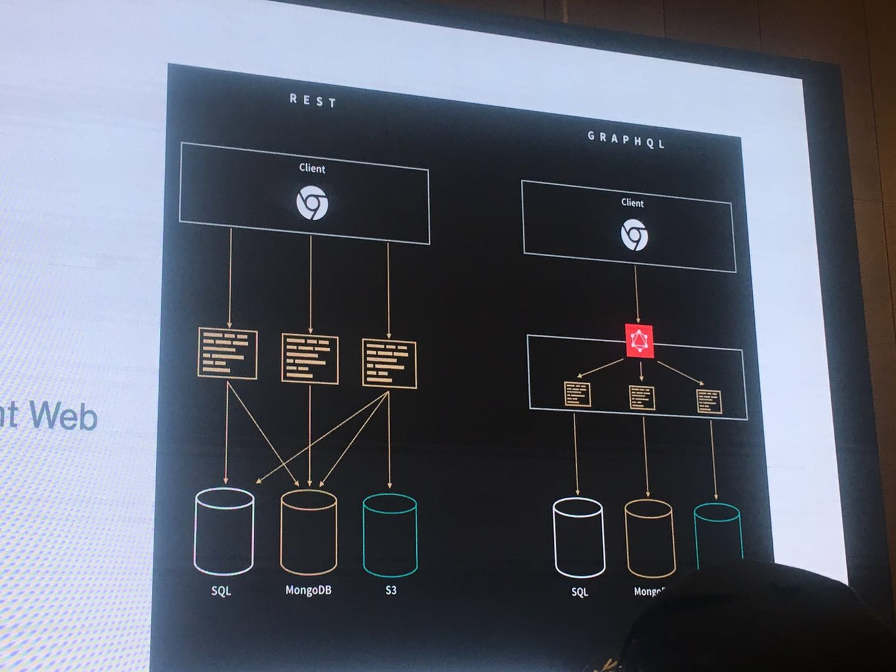
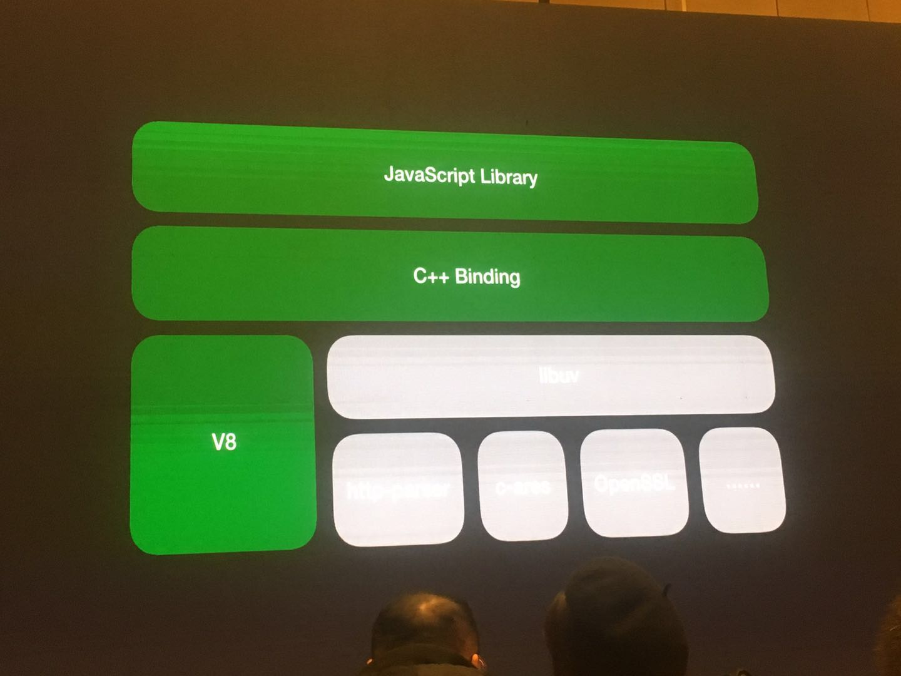
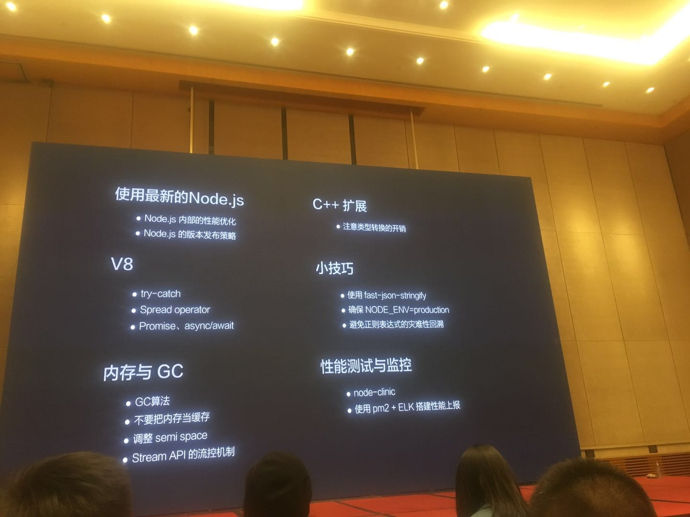
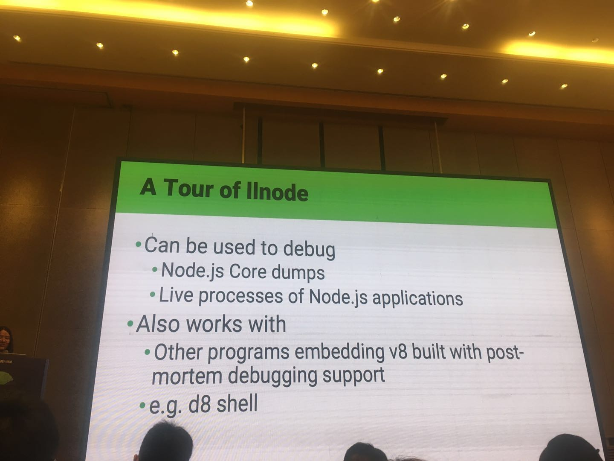
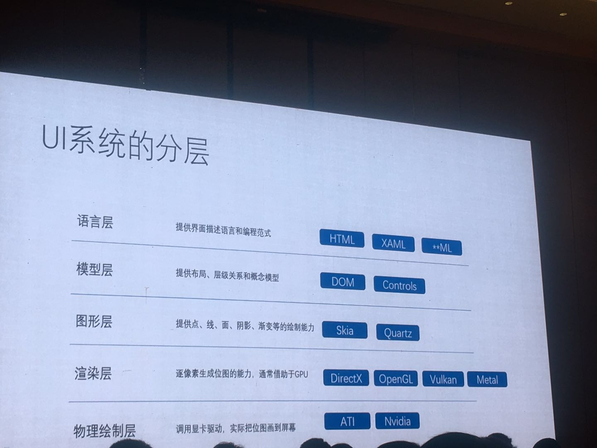
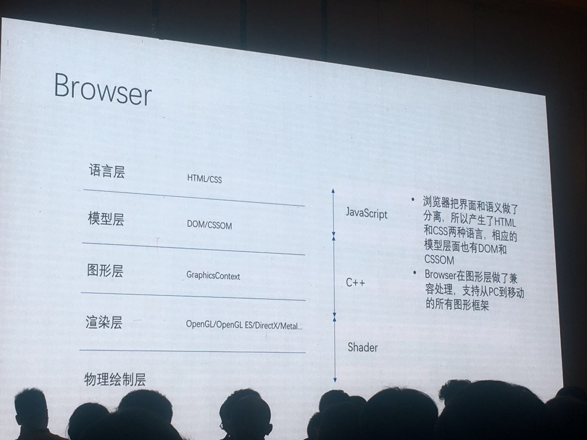
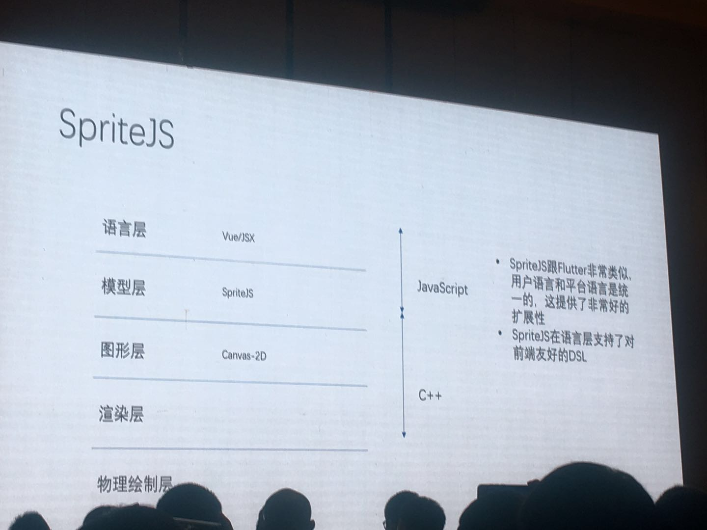
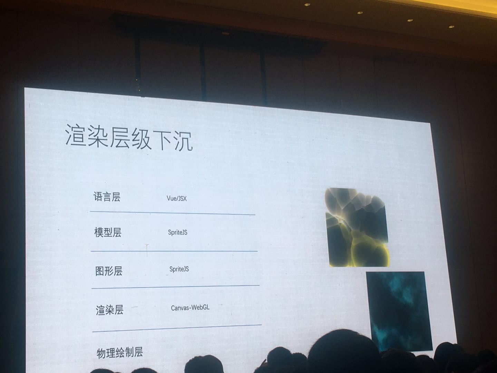

<!DOCTYPE html>
<html>
<head><meta name="generator" content="Hexo 3.9.0">
  <meta charset="utf-8">
  

  
  <title>第十三届 D2 参会体验 | QINGGUOING</title>
  <meta name="viewport" content="width=device-width, initial-scale=1, maximum-scale=1">
  <meta name="description" content="2018-01-06 D2 技术论坛">
<meta name="keywords" content="D2">
<meta property="og:type" content="article">
<meta property="og:title" content="第十三届 D2 参会体验">
<meta property="og:url" content="https://qingguoing.com/2019/01/07/第十三届-D2-参会体验/index.html">
<meta property="og:site_name" content="QINGGUOING">
<meta property="og:description" content="2018-01-06 D2 技术论坛">
<meta property="og:locale" content="default">
<meta property="og:image" content="https://qingguoing.com/2019/01/07/第十三届-D2-参会体验/graphQL.jpeg">
<meta property="og:image" content="https://qingguoing.com/2019/01/07/第十三届-D2-参会体验/1.jpeg">
<meta property="og:image" content="https://qingguoing.com/2019/01/07/第十三届-D2-参会体验/2.jpeg">
<meta property="og:image" content="https://qingguoing.com/2019/01/07/第十三届-D2-参会体验/3.jpeg">
<meta property="og:image" content="https://qingguoing.com/2019/01/07/第十三届-D2-参会体验/4.jpeg">
<meta property="og:image" content="https://qingguoing.com/2019/01/07/第十三届-D2-参会体验/5.jpeg">
<meta property="og:image" content="https://qingguoing.com/2019/01/07/第十三届-D2-参会体验/6.jpeg">
<meta property="og:image" content="https://qingguoing.com/2019/01/07/第十三届-D2-参会体验/7.jpeg">
<meta property="og:image" content="https://qingguoing.com/2019/01/07/第十三届-D2-参会体验/8.jpeg">
<meta property="og:image" content="https://qingguoing.com/2019/01/07/第十三届-D2-参会体验/9.jpeg">
<meta property="og:updated_time" content="2019-06-29T15:01:39.337Z">
<meta name="twitter:card" content="summary">
<meta name="twitter:title" content="第十三届 D2 参会体验">
<meta name="twitter:description" content="2018-01-06 D2 技术论坛">
<meta name="twitter:image" content="https://qingguoing.com/2019/01/07/第十三届-D2-参会体验/graphQL.jpeg">
  
    <link rel="alternate" href="/atom.xml" title="QINGGUOING" type="application/atom+xml">
  
  
    <link rel="icon" href="/favicon.ico">
  
  
    <link href="//fonts.googleapis.com/css?family=Source+Code+Pro" rel="stylesheet" type="text/css">
  
  <link rel="stylesheet" href="/css/style.css">
</head>
</html>
<body>
  <div id="container">
    <div id="wrap">
      <header id="header">
  <div id="banner"></div>
  <div id="header-outer" class="outer">
    <div id="header-title" class="inner">
      <h1 id="logo-wrap">
        <a href="/" id="logo">QINGGUOING</a>
      </h1>
      
    </div>
    <div id="header-inner" class="inner">
      <nav id="main-nav">
        <a id="main-nav-toggle" class="nav-icon"></a>
        
          <a class="main-nav-link" href="/">Home</a>
        
          <a class="main-nav-link" href="/archives">Archives</a>
        
      </nav>
      <nav id="sub-nav">
        
          <a id="nav-rss-link" class="nav-icon" href="/atom.xml" title="RSS Feed"></a>
        
        <a id="nav-search-btn" class="nav-icon" title="Search"></a>
      </nav>
      <div id="search-form-wrap">
        <form action="//google.com/search" method="get" accept-charset="UTF-8" class="search-form"><input type="search" name="q" class="search-form-input" placeholder="Search"><button type="submit" class="search-form-submit">&#xF002;</button><input type="hidden" name="sitesearch" value="https://qingguoing.com"></form>
      </div>
    </div>
  </div>
</header>
      <div class="outer">
        <section id="main"><article id="post-第十三届-D2-参会体验" class="article article-type-post" itemscope itemprop="blogPost">
  <div class="article-meta">
    <a href="/2019/01/07/第十三届-D2-参会体验/" class="article-date">
  <time datetime="2019-01-07T14:20:39.000Z" itemprop="datePublished">2019-01-07</time>
</a>
    
  <div class="article-category">
    <a class="article-category-link" href="/categories/技术论坛/">技术论坛</a>
  </div>

  </div>
  <div class="article-inner">
    
    
      <header class="article-header">
        
  
    <h1 class="article-title" itemprop="name">
      第十三届 D2 参会体验
    </h1>
  

      </header>
    
    <div class="article-entry" itemprop="articleBody">
      
        <p>2018-01-06 D2 技术论坛</p>
<a id="more"></a>
<p>笔者首次参加 D2 前端交流，挑选了几个感兴趣的场次听讲，收获颇多，遂简单记录下来。</p>
<blockquote>
<p>因为有些技术或特性也是仅停留在听过的阶段，待后面深度了解和使用过来再回来介绍</p>
</blockquote>
<p>下面是笔者参加的分会场的顺序：</p>
<h3 id="1-大会开场辞-圆心-阿里前端委员会主席"><a href="#1-大会开场辞-圆心-阿里前端委员会主席" class="headerlink" title="1. 大会开场辞 - 圆心 / 阿里前端委员会主席"></a>1. 大会开场辞 - 圆心 / 阿里前端委员会主席</h3><blockquote>
<p>大致总结了下，可能会有遗漏。</p>
</blockquote>
<p>大佬总结了过去几年的前发展和预测了接下来的前端走向，当前围绕着 react 和 vue 的前端开发体系已经基本稳定。同时，NodeJS 的发展给打通了前端走向后端的壁垒，给前端带来了更多的可能性，而无线时代端技术的融合给整个前端体系带来新的想象力空间。接下来的发展将主要围绕着以下几个方向：</p>
<ul>
<li>中后台体系建设</li>
<li>小程序</li>
<li>数据可视化</li>
<li>AI</li>
<li>云 + 端</li>
</ul>
<h3 id="2-《GraphQL-rewrite-and-performance-improvement》-王啟安-Facebook-前端工程师"><a href="#2-《GraphQL-rewrite-and-performance-improvement》-王啟安-Facebook-前端工程师" class="headerlink" title="2. 《GraphQL rewrite and performance improvement》- 王啟安 / Facebook 前端工程师"></a>2. 《GraphQL rewrite and performance improvement》- 王啟安 / Facebook 前端工程师</h3><p>3 号厅第一场，围绕着 <a href="https://graphql.org/" target="_blank" rel="noopener">GraphQL</a> 主题。介绍了 GraphQL 的基本用法和一些优势。<br><br>笔者之前只是简单看过 graphQL 的文档，不过听下来感觉接下来项目中有机会是可以一试的。主要优势是前期服务端通过设计，把接口抽象成更细的『原子』形式，前端请求所需要的字段信息和条件都可以通过一个统一的 <code>url + query schema</code> 的形式来完成。后期如果前端有变更和改动，只需要改变这个 schema，取所需字段就行，节省了开发时间同时，也精简了接口返回的字段数据，对于弱网用户更加友好。</p>
<p>不过从现场提问的问题和其他人聊的结果来看，graphQL 对于频繁的数据增删改场景来说，不是那么的友好。</p>
<h3 id="3-《你不知道的Node-js性能优化》-王伟嘉-腾讯云研发工程师-Node-js-Core-Collaborator"><a href="#3-《你不知道的Node-js性能优化》-王伟嘉-腾讯云研发工程师-Node-js-Core-Collaborator" class="headerlink" title="3. 《你不知道的Node.js性能优化》- 王伟嘉 / 腾讯云研发工程师 Node.js Core Collaborator"></a>3. 《你不知道的Node.js性能优化》- 王伟嘉 / 腾讯云研发工程师 Node.js Core Collaborator</h3><p>主要介绍了 NodeJS 团队在性能优化方面做的一些优化和大家日常开发过程应该注意到的一些点。</p>
<p></p>
<p>上图是 NodeJS 的架构图，绿色标注部分是 NodeJS 团队能做的优化部分。其中 V8 是 NodeJS 源码内部包含的 V8 解析器。<br>通篇总结可见 PPT 拍照如下：</p>
<p></p>
<h3 id="4-《如何通过逆向工程-V8-从故障的进程中复活-JavaScript》-张秋怡-Node-js-Technical-Steering-Committee-的成员"><a href="#4-《如何通过逆向工程-V8-从故障的进程中复活-JavaScript》-张秋怡-Node-js-Technical-Steering-Committee-的成员" class="headerlink" title="4. 《如何通过逆向工程 V8 从故障的进程中复活 JavaScript》- 张秋怡 / Node.js Technical Steering Committee 的成员"></a>4. 《如何通过逆向工程 V8 从故障的进程中复活 JavaScript》- 张秋怡 / Node.js Technical Steering Committee 的成员</h3><p>围绕着 <a href="https://github.com/nodejs/llnode" target="_blank" rel="noopener">llnode</a> 进行开展，讲述了底层实现原理和读写内存的具体细节，整篇下来听的云里雾里，而且暂时没有合适的业务适配场景，所以就当作开阔视野了。</p>
<p></p>
<h3 id="5-《Migration-to-React-Suspense》-闫畅-Facebook-前端工程师"><a href="#5-《Migration-to-React-Suspense》-闫畅-Facebook-前端工程师" class="headerlink" title="5. 《Migration to React Suspense》- 闫畅 / Facebook 前端工程师"></a>5. 《Migration to React Suspense》- 闫畅 / Facebook 前端工程师</h3><p>围绕着 react 的新特性 suspense 做展看，代替了之前业务层的 react-loadable 写法，实业务代码更加简洁和聚焦。相关 ppt 和 Demo 链接如下：<a href="https://github.com/cyan33/Migration-to-Suspense" target="_blank" rel="noopener">https://github.com/cyan33/Migration-to-Suspense</a></p>
<h3 id="6-《WebAssembly-becoming-the-biggest-platform》-Sven-Sauleau-TC39成员、Babel-核心成员、-Webpack核心成员、-WebAssembly专家"><a href="#6-《WebAssembly-becoming-the-biggest-platform》-Sven-Sauleau-TC39成员、Babel-核心成员、-Webpack核心成员、-WebAssembly专家" class="headerlink" title="6. 《WebAssembly becoming the biggest platform》- Sven Sauleau / TC39成员、Babel 核心成员、 Webpack核心成员、 WebAssembly专家"></a>6. 《WebAssembly becoming the biggest platform》- Sven Sauleau / TC39成员、Babel 核心成员、 Webpack核心成员、 WebAssembly专家</h3><p>全程英文分享，分析了 WebAssembly 现状和发展，并强调了 WebAssembly 不会替代当前使用的 JavaScript，PPT 链接：<a href="http://d2-2019.sauleau.com/" target="_blank" rel="noopener">http://d2-2019.sauleau.com/</a></p>
<p>从分享内容来看，WebAssembly 实现了其它语言跑在浏览器端的可能，而且已经有一些小游戏的 Demo 跑出来了，但是对于 NodeJS 的影响必将小，而对于 JSer 的影响需要看接下来的发展和性能的对比了。</p>
<h3 id="7-《从-spritejs-谈完整的-UI-系统设计》-Winter-计算机之子"><a href="#7-《从-spritejs-谈完整的-UI-系统设计》-Winter-计算机之子" class="headerlink" title="7. 《从 spritejs 谈完整的 UI 系统设计》- Winter / 计算机之子"></a>7. 《从 spritejs 谈完整的 UI 系统设计》- Winter / 计算机之子</h3><p>从 spritejs 切入，分享了完整的 UI 系统设计模式和接下来的 spritejs 的发展。感触最大的就是对于 UI 系统分层的总结。</p>
<p><br><br><br></p>
<h3 id="8-《淘宝-MiniApp-容器架构探索之路》-炼玉-阿里巴巴-高级无线开发工程师"><a href="#8-《淘宝-MiniApp-容器架构探索之路》-炼玉-阿里巴巴-高级无线开发工程师" class="headerlink" title="8. 《淘宝 MiniApp 容器架构探索之路》- 炼玉 / 阿里巴巴 高级无线开发工程师"></a>8. 《淘宝 MiniApp 容器架构探索之路》- 炼玉 / 阿里巴巴 高级无线开发工程师</h3><p>介绍了淘宝小程序的底层架构的设计和发展。</p>
<p><br></p>
<p>感觉大家听下来的最惊讶的就是，淘宝小程序和支付宝小程序只是在 DSL 层面进行了适配。</p>
<h3 id="总结"><a href="#总结" class="headerlink" title="总结"></a>总结</h3><p>此次 D2 开阔了一定的视野，而且收获的一些点，后面会在实际项目中尝试使用，到时再记录更详细的使用经验。</p>

      
    </div>
    <footer class="article-footer">
      <a data-url="https://qingguoing.com/2019/01/07/第十三届-D2-参会体验/" data-id="cjxhnmikn0013jp8c04r13pwa" class="article-share-link">Share</a>
      
      
  <ul class="article-tag-list"><li class="article-tag-list-item"><a class="article-tag-list-link" href="/tags/D2/">D2</a></li></ul>

    </footer>
  </div>
  
    
<nav id="article-nav">
  
    <a href="/2019/05/13/JS-异步处理系列（一）-event loop/" id="article-nav-newer" class="article-nav-link-wrap">
      <strong class="article-nav-caption">Newer</strong>
      <div class="article-nav-title">
        
          JS 异步处理系列（一）—— Event Loop
        
      </div>
    </a>
  
  
    <a href="/2018/11/12/HTTP-系列之-Content-Type/" id="article-nav-older" class="article-nav-link-wrap">
      <strong class="article-nav-caption">Older</strong>
      <div class="article-nav-title">HTTP 系列之 Content-Type</div>
    </a>
  
</nav>

  
</article>

</section>
        
          <aside id="sidebar">
  
    
  <div class="widget-wrap">
    <h3 class="widget-title">Categories</h3>
    <div class="widget">
      <ul class="category-list"><li class="category-list-item"><a class="category-list-link" href="/categories/Babel/">Babel</a></li><li class="category-list-item"><a class="category-list-link" href="/categories/Diary/">Diary</a></li><li class="category-list-item"><a class="category-list-link" href="/categories/HTTP/">HTTP</a></li><li class="category-list-item"><a class="category-list-link" href="/categories/JavaScript/">JavaScript</a></li><li class="category-list-item"><a class="category-list-link" href="/categories/Linux/">Linux</a></li><li class="category-list-item"><a class="category-list-link" href="/categories/Node/">Node</a></li><li class="category-list-item"><a class="category-list-link" href="/categories/React/">React</a></li><li class="category-list-item"><a class="category-list-link" href="/categories/Tools/">Tools</a></li><li class="category-list-item"><a class="category-list-link" href="/categories/python/">python</a></li><li class="category-list-item"><a class="category-list-link" href="/categories/技术论坛/">技术论坛</a></li></ul>
    </div>
  </div>


  
    
  <div class="widget-wrap">
    <h3 class="widget-title">Tags</h3>
    <div class="widget">
      <ul class="tag-list"><li class="tag-list-item"><a class="tag-list-link" href="/tags/Async/">Async</a></li><li class="tag-list-item"><a class="tag-list-link" href="/tags/D2/">D2</a></li><li class="tag-list-item"><a class="tag-list-link" href="/tags/ES6/">ES6</a></li><li class="tag-list-item"><a class="tag-list-link" href="/tags/EventLoop/">EventLoop</a></li><li class="tag-list-item"><a class="tag-list-link" href="/tags/Flux/">Flux</a></li><li class="tag-list-item"><a class="tag-list-link" href="/tags/H5/">H5</a></li><li class="tag-list-item"><a class="tag-list-link" href="/tags/HTTP/">HTTP</a></li><li class="tag-list-item"><a class="tag-list-link" href="/tags/JS-异步处理系列/">JS 异步处理系列</a></li><li class="tag-list-item"><a class="tag-list-link" href="/tags/Node/">Node</a></li><li class="tag-list-item"><a class="tag-list-link" href="/tags/Performance/">Performance</a></li><li class="tag-list-item"><a class="tag-list-link" href="/tags/Promise/">Promise</a></li><li class="tag-list-item"><a class="tag-list-link" href="/tags/Redux/">Redux</a></li><li class="tag-list-item"><a class="tag-list-link" href="/tags/Vue/">Vue</a></li><li class="tag-list-item"><a class="tag-list-link" href="/tags/awk/">awk</a></li><li class="tag-list-item"><a class="tag-list-link" href="/tags/babel-plugin/">babel-plugin</a></li><li class="tag-list-item"><a class="tag-list-link" href="/tags/koa/">koa</a></li><li class="tag-list-item"><a class="tag-list-link" href="/tags/learning/">learning</a></li><li class="tag-list-item"><a class="tag-list-link" href="/tags/python/">python</a></li><li class="tag-list-item"><a class="tag-list-link" href="/tags/tools/">tools</a></li><li class="tag-list-item"><a class="tag-list-link" href="/tags/vscode/">vscode</a></li><li class="tag-list-item"><a class="tag-list-link" href="/tags/生活随笔/">生活随笔</a></li><li class="tag-list-item"><a class="tag-list-link" href="/tags/自动化测试/">自动化测试</a></li></ul>
    </div>
  </div>


  
    
  <div class="widget-wrap">
    <h3 class="widget-title">Tag Cloud</h3>
    <div class="widget tagcloud">
      <a href="/tags/Async/" style="font-size: 10px;">Async</a> <a href="/tags/D2/" style="font-size: 10px;">D2</a> <a href="/tags/ES6/" style="font-size: 16.67px;">ES6</a> <a href="/tags/EventLoop/" style="font-size: 13.33px;">EventLoop</a> <a href="/tags/Flux/" style="font-size: 13.33px;">Flux</a> <a href="/tags/H5/" style="font-size: 10px;">H5</a> <a href="/tags/HTTP/" style="font-size: 10px;">HTTP</a> <a href="/tags/JS-异步处理系列/" style="font-size: 20px;">JS 异步处理系列</a> <a href="/tags/Node/" style="font-size: 10px;">Node</a> <a href="/tags/Performance/" style="font-size: 10px;">Performance</a> <a href="/tags/Promise/" style="font-size: 10px;">Promise</a> <a href="/tags/Redux/" style="font-size: 10px;">Redux</a> <a href="/tags/Vue/" style="font-size: 10px;">Vue</a> <a href="/tags/awk/" style="font-size: 10px;">awk</a> <a href="/tags/babel-plugin/" style="font-size: 10px;">babel-plugin</a> <a href="/tags/koa/" style="font-size: 13.33px;">koa</a> <a href="/tags/learning/" style="font-size: 10px;">learning</a> <a href="/tags/python/" style="font-size: 10px;">python</a> <a href="/tags/tools/" style="font-size: 10px;">tools</a> <a href="/tags/vscode/" style="font-size: 10px;">vscode</a> <a href="/tags/生活随笔/" style="font-size: 10px;">生活随笔</a> <a href="/tags/自动化测试/" style="font-size: 10px;">自动化测试</a>
    </div>
  </div>

  
    
  <div class="widget-wrap">
    <h3 class="widget-title">Archives</h3>
    <div class="widget">
      <ul class="archive-list"><li class="archive-list-item"><a class="archive-list-link" href="/archives/2019/06/">June 2019</a></li><li class="archive-list-item"><a class="archive-list-link" href="/archives/2019/05/">May 2019</a></li><li class="archive-list-item"><a class="archive-list-link" href="/archives/2019/01/">January 2019</a></li><li class="archive-list-item"><a class="archive-list-link" href="/archives/2018/11/">November 2018</a></li><li class="archive-list-item"><a class="archive-list-link" href="/archives/2018/10/">October 2018</a></li><li class="archive-list-item"><a class="archive-list-link" href="/archives/2018/07/">July 2018</a></li><li class="archive-list-item"><a class="archive-list-link" href="/archives/2018/01/">January 2018</a></li><li class="archive-list-item"><a class="archive-list-link" href="/archives/2017/10/">October 2017</a></li><li class="archive-list-item"><a class="archive-list-link" href="/archives/2017/09/">September 2017</a></li><li class="archive-list-item"><a class="archive-list-link" href="/archives/2017/08/">August 2017</a></li><li class="archive-list-item"><a class="archive-list-link" href="/archives/2017/07/">July 2017</a></li><li class="archive-list-item"><a class="archive-list-link" href="/archives/2017/04/">April 2017</a></li><li class="archive-list-item"><a class="archive-list-link" href="/archives/2016/08/">August 2016</a></li></ul>
    </div>
  </div>


  
    
  <div class="widget-wrap">
    <h3 class="widget-title">Recent Posts</h3>
    <div class="widget">
      <ul>
        
          <li>
            <a href="/2019/06/27/自动处理对象结构中-null-字段的-babel-插件/">自动处理对象结构中 null 字段的 babel 插件</a>
          </li>
        
          <li>
            <a href="/2019/05/26/如何编写好一个测试用例/">如何编写好一个测试用例</a>
          </li>
        
          <li>
            <a href="/2019/05/20/JS-异步处理系列（四）-async-await/">JS 异步处理系列（四）- async &amp; await</a>
          </li>
        
          <li>
            <a href="/2019/05/19/JS-异步处理系列（三）-Promise/">JS 异步处理系列（三）- Promise</a>
          </li>
        
          <li>
            <a href="/2019/05/14/JS-异步处理系列（二）-Node-Event-Loop/">JS 异步处理系列（二）- Node Event Loop</a>
          </li>
        
      </ul>
    </div>
  </div>

  
</aside>
        
      </div>
      <footer id="footer">
  
  <div class="outer">
    <div id="footer-info" class="inner">
      &copy; 2019 qingguoing<br>
      Powered by <a href="http://hexo.io/" target="_blank">Hexo</a>
    </div>
  </div>
</footer>
    </div>
    <nav id="mobile-nav">
  
    <a href="/" class="mobile-nav-link">Home</a>
  
    <a href="/archives" class="mobile-nav-link">Archives</a>
  
</nav>
    

<script src="//ajax.googleapis.com/ajax/libs/jquery/2.0.3/jquery.min.js"></script>


  <link rel="stylesheet" href="/fancybox/jquery.fancybox.css">
  <script src="/fancybox/jquery.fancybox.pack.js"></script>


<script src="/js/script.js"></script>


  </div>
</body>
</html>